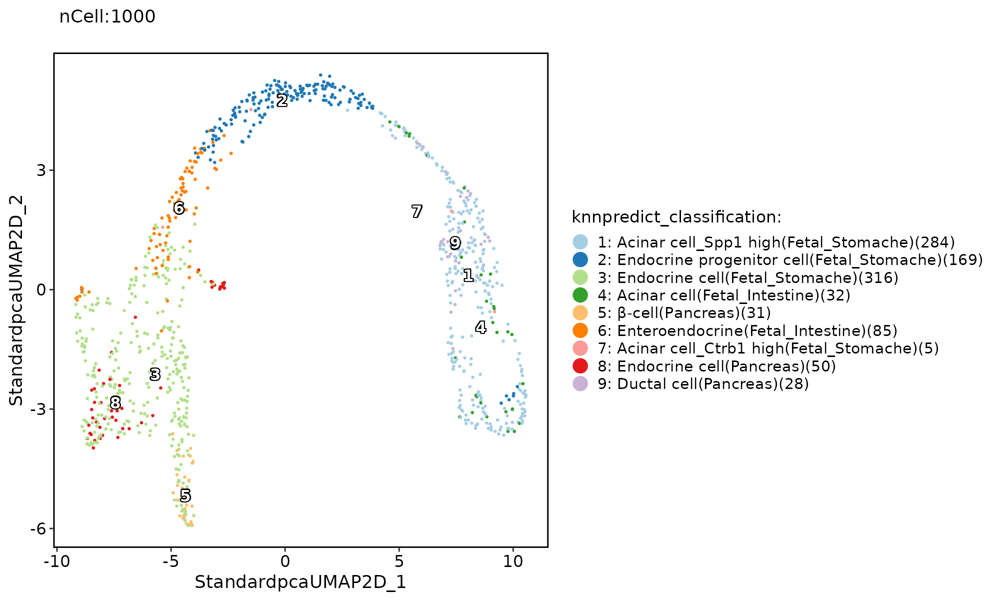
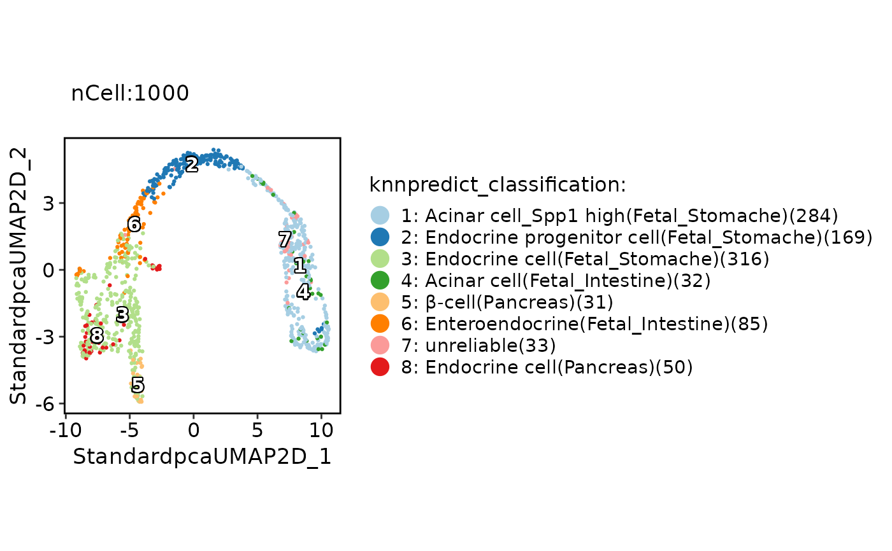
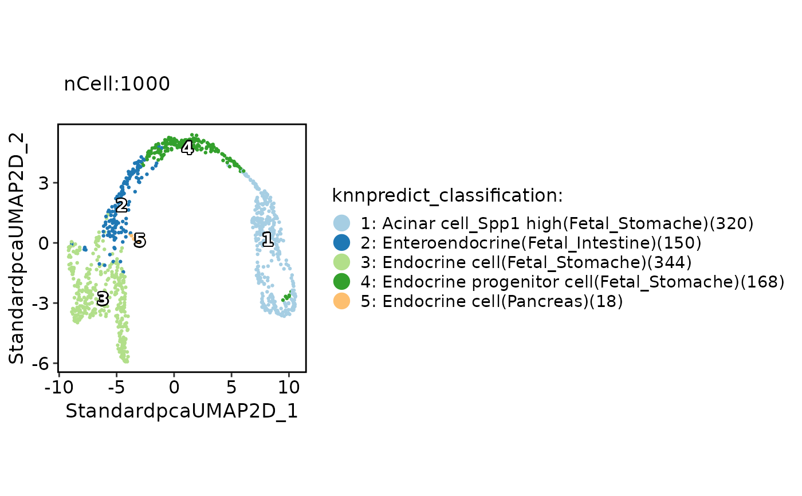

RunKNNPredict.RdAnnotate single cells using similarity.
RunKNNPredict(
srt_query,
srt_ref = NULL,
bulk_ref = NULL,
query_group = NULL,
ref_group = NULL,
query_assay = NULL,
ref_assay = NULL,
query_reduction = NULL,
ref_reduction = NULL,
query_dims = ref_dims,
ref_dims = 1:30,
query_collapsing = !is.null(query_group),
ref_collapsing = TRUE,
return_full_distance_matrix = FALSE,
features = NULL,
features_type = c("HVF", "DE"),
feature_source = "both",
nfeatures = 2000,
DEtest_param = list(max.cells.per.ident = 200, test.use = "wilcox"),
DE_threshold = "p_val_adj < 0.05",
nn_method = NULL,
distance_metric = "cosine",
k = 30,
filter_lowfreq = 0,
prefix = "knnpredict",
force = FALSE
)A seurat object.
A cell atlas matrix, e.g., SCP::ref_scHCL
assay used in the srt_query
Threshold used to filter the DE features. Default is "p_val < 0.05". If using "roc" test, DE_threshold should be needs to be reassigned. e.g. "power > 0.5"
Number of predictions to return.
Whether to force to annotate when data type is different.
Method used to measure cell similarity. Can be one of similarity metrics: cosine, correlation, jaccard, ejaccard, dice, edice, hamman,
simple matching, faith, or distance metrics: euclidean, chisquared, kullback, manhattan, maximum, canberra,
minkowski, hamming.
slot used in the srt_query
# Annotate cells using bulk RNA-seq data
data("pancreas1k")
pancreas1k <- Standard_SCP(pancreas1k)
#> [2022-06-19 03:47:56] Start Standard_SCP
#> [2022-06-19 03:47:56] Checking srtList... ...
#> Data 1/1 of the srtList is raw counts. Perform NormalizeData(logCPM) on the data ...
#> Perform FindVariableFeatures on the data 1/1 of the srtList...
#> Use the separate HVF from the existed HVF in srtList...
#> [2022-06-19 03:47:58] Finished checking.
#> Perform ScaleData on the data...
#> Perform linear dimension reduction (pca) on the data...
#> Perform FindClusters (louvain) on the data...
#> Reorder clusters...
#> Perform nonlinear dimension reduction (umap) on the data...
#> Found more than one class "dist" in cache; using the first, from namespace 'BiocGenerics'
#> Also defined by ‘spam’
#> Found more than one class "dist" in cache; using the first, from namespace 'BiocGenerics'
#> Also defined by ‘spam’
#> Found more than one class "dist" in cache; using the first, from namespace 'BiocGenerics'
#> Also defined by ‘spam’
#> Found more than one class "dist" in cache; using the first, from namespace 'BiocGenerics'
#> Also defined by ‘spam’
#> [2022-06-19 03:48:17] Standard_SCP done
#> Elapsed time: 21.06 secs
pancreas1k <- RunKNNPredict(srt_query = pancreas1k, bulk_ref = SCP::ref_scMCA)
#> Use 535 common features to calculate distance.
#> Detected query data type: log_normalized_counts
#> Detected reference data type: log_normalized_counts
#> Calculate similarity...
#> Use 'raw' method to find neighbors.
#> Predict cell type...
ClassDimPlot(pancreas1k, group.by = "knnpredict_classification", label = TRUE)
#> Warning: conversion failure on '5: β-cell(Pancreas)(31)' in 'mbcsToSbcs': dot substituted for <ce>
#> Warning: conversion failure on '5: β-cell(Pancreas)(31)' in 'mbcsToSbcs': dot substituted for <b2>
#> Warning: conversion failure on '5: β-cell(Pancreas)(31)' in 'mbcsToSbcs': dot substituted for <ce>
#> Warning: conversion failure on '5: β-cell(Pancreas)(31)' in 'mbcsToSbcs': dot substituted for <b2>
#> Warning: conversion failure on '5: β-cell(Pancreas)(31)' in 'mbcsToSbcs': dot substituted for <ce>
#> Warning: conversion failure on '5: β-cell(Pancreas)(31)' in 'mbcsToSbcs': dot substituted for <b2>
#> Warning: conversion failure on '5: β-cell(Pancreas)(31)' in 'mbcsToSbcs': dot substituted for <ce>
#> Warning: conversion failure on '5: β-cell(Pancreas)(31)' in 'mbcsToSbcs': dot substituted for <b2>
#> Warning: conversion failure on '5: β-cell(Pancreas)(31)' in 'mbcsToSbcs': dot substituted for <ce>
#> Warning: conversion failure on '5: β-cell(Pancreas)(31)' in 'mbcsToSbcs': dot substituted for <b2>
#> Warning: conversion failure on '5: β-cell(Pancreas)(31)' in 'mbcsToSbcs': dot substituted for <ce>
#> Warning: conversion failure on '5: β-cell(Pancreas)(31)' in 'mbcsToSbcs': dot substituted for <b2>
#> Warning: conversion failure on '5: β-cell(Pancreas)(31)' in 'mbcsToSbcs': dot substituted for <ce>
#> Warning: conversion failure on '5: β-cell(Pancreas)(31)' in 'mbcsToSbcs': dot substituted for <b2>
#> Warning: conversion failure on '5: β-cell(Pancreas)(31)' in 'mbcsToSbcs': dot substituted for <ce>
#> Warning: conversion failure on '5: β-cell(Pancreas)(31)' in 'mbcsToSbcs': dot substituted for <b2>
#> Warning: conversion failure on '5: β-cell(Pancreas)(31)' in 'mbcsToSbcs': dot substituted for <ce>
#> Warning: conversion failure on '5: β-cell(Pancreas)(31)' in 'mbcsToSbcs': dot substituted for <b2>
#> Warning: conversion failure on '5: β-cell(Pancreas)(31)' in 'mbcsToSbcs': dot substituted for <ce>
#> Warning: conversion failure on '5: β-cell(Pancreas)(31)' in 'mbcsToSbcs': dot substituted for <b2>

# Removal of low credible cell types from the predicted results
pancreas1k <- RunKNNPredict(srt_query = pancreas1k, bulk_ref = SCP::ref_scMCA, filter_lowfreq = 30)
#> Use 535 common features to calculate distance.
#> Detected query data type: log_normalized_counts
#> Detected reference data type: log_normalized_counts
#> Calculate similarity...
#> Use 'raw' method to find neighbors.
#> Predict cell type...
ClassDimPlot(pancreas1k, group.by = "knnpredict_classification", label = TRUE)
#> Warning: conversion failure on '5: β-cell(Pancreas)(31)' in 'mbcsToSbcs': dot substituted for <ce>
#> Warning: conversion failure on '5: β-cell(Pancreas)(31)' in 'mbcsToSbcs': dot substituted for <b2>
#> Warning: conversion failure on '5: β-cell(Pancreas)(31)' in 'mbcsToSbcs': dot substituted for <ce>
#> Warning: conversion failure on '5: β-cell(Pancreas)(31)' in 'mbcsToSbcs': dot substituted for <b2>
#> Warning: conversion failure on '5: β-cell(Pancreas)(31)' in 'mbcsToSbcs': dot substituted for <ce>
#> Warning: conversion failure on '5: β-cell(Pancreas)(31)' in 'mbcsToSbcs': dot substituted for <b2>
#> Warning: conversion failure on '5: β-cell(Pancreas)(31)' in 'mbcsToSbcs': dot substituted for <ce>
#> Warning: conversion failure on '5: β-cell(Pancreas)(31)' in 'mbcsToSbcs': dot substituted for <b2>
#> Warning: conversion failure on '5: β-cell(Pancreas)(31)' in 'mbcsToSbcs': dot substituted for <ce>
#> Warning: conversion failure on '5: β-cell(Pancreas)(31)' in 'mbcsToSbcs': dot substituted for <b2>
#> Warning: conversion failure on '5: β-cell(Pancreas)(31)' in 'mbcsToSbcs': dot substituted for <ce>
#> Warning: conversion failure on '5: β-cell(Pancreas)(31)' in 'mbcsToSbcs': dot substituted for <b2>
#> Warning: conversion failure on '5: β-cell(Pancreas)(31)' in 'mbcsToSbcs': dot substituted for <ce>
#> Warning: conversion failure on '5: β-cell(Pancreas)(31)' in 'mbcsToSbcs': dot substituted for <b2>
#> Warning: conversion failure on '5: β-cell(Pancreas)(31)' in 'mbcsToSbcs': dot substituted for <ce>
#> Warning: conversion failure on '5: β-cell(Pancreas)(31)' in 'mbcsToSbcs': dot substituted for <b2>
#> Warning: conversion failure on '5: β-cell(Pancreas)(31)' in 'mbcsToSbcs': dot substituted for <ce>
#> Warning: conversion failure on '5: β-cell(Pancreas)(31)' in 'mbcsToSbcs': dot substituted for <b2>
#> Warning: conversion failure on '5: β-cell(Pancreas)(31)' in 'mbcsToSbcs': dot substituted for <ce>
#> Warning: conversion failure on '5: β-cell(Pancreas)(31)' in 'mbcsToSbcs': dot substituted for <b2>

# Annotate clusters using bulk RNA-seq data
pancreas1k <- RunKNNPredict(srt_query = pancreas1k, query_group = "SubCellType", bulk_ref = SCP::ref_scMCA)
#> Use 535 common features to calculate distance.
#> Detected query data type: log_normalized_counts
#> Detected reference data type: log_normalized_counts
#> Calculate similarity...
#> Use 'raw' method to find neighbors.
#> Predict cell type...
ClassDimPlot(pancreas1k, group.by = "knnpredict_classification", label = TRUE)

if (interactive()) {
# Annotate using single cell RNA-seq data
if (!require("SeuratData", quietly = TRUE)) {
devtools::install_github("zhanghao-njmu/seurat-data")
}
library(stringr)
library(SeuratData)
suppressWarnings(InstallData("panc8"))
data("panc8")
# Simply convert genes from human to mouse and preprocess the data
genenm <- make.unique(str_to_title(rownames(panc8)))
panc8 <- RenameFeatures(panc8, newnames = genenm)
panc8 <- check_srtMerge(panc8, batch = "tech")[["srtMerge"]]
pancreas1k <- RunKNNPredict(srt_query = pancreas1k, srt_ref = panc8, ref_group = "celltype")
ClassDimPlot(pancreas1k, group.by = "knnpredict_classification", label = TRUE)
ExpDimPlot(pancreas1k, features = "knnpredict_simil")
pancreas1k <- RunKNNPredict(
srt_query = pancreas1k, srt_ref = panc8,
ref_group = "celltype", ref_collapsing = FALSE
)
ClassDimPlot(pancreas1k, group.by = "knnpredict_classification", label = TRUE)
ExpDimPlot(pancreas1k, features = "knnpredict_prob")
pancreas1k <- RunKNNPredict(
srt_query = pancreas1k, srt_ref = panc8,
query_group = "SubCellType", ref_group = "celltype",
query_collapsing = TRUE, ref_collapsing = TRUE
)
ClassDimPlot(pancreas1k, group.by = "knnpredict_classification", label = TRUE)
ExpDimPlot(pancreas1k, features = "knnpredict_simil")
# Annotate with DE gene instead of HVF
pancreas1k <- RunKNNPredict(
srt_query = pancreas1k, srt_ref = panc8,
ref_group = "celltype",
features_type = "DE", feature_source = "ref"
)
ClassDimPlot(pancreas1k, group.by = "knnpredict_classification", label = TRUE)
ExpDimPlot(pancreas1k, features = "knnpredict_simil")
pancreas1k <- RunKNNPredict(
srt_query = pancreas1k, srt_ref = panc8,
query_group = "SubCellType", ref_group = "celltype",
features_type = "DE", feature_source = "both"
)
ClassDimPlot(pancreas1k, group.by = "knnpredict_classification", label = TRUE)
ExpDimPlot(pancreas1k, features = "knnpredict_simil")
}